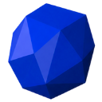

Random events
Two things turn up at random while you gather with the game open. Neither happens during offline progress.
🎁 Strange bundles
Now and then a strange bundle washes up where you're gathering, in any gathering skill. Grab it from the gathering page or the action bar before it's gone. It always gives everything below; only the amounts are random.
What it gives
- 3–6 of the spot's main resource (its first drop)
- 🪙 20–49 coins
- 2× the XP of one action
At Mine Gem Rocks it's always 
Settings can also send a desktop notification when one turns up.
🎯 Skill checks
Skill checks are an optional bonus for watching your gathering. You keep gathering whether you do them or not.
- They turn up while the gathering page shows the skill you're training, the game window is focused, and they're on in Settings.
- A hit finishes the action you're on, with its resource and XP.
- Each hit in a row adds +8% gathering speed, up to +40% at a streak of 5.
- A miss, or letting one run out, ends the streak.
| Skill | Check | What to do | Bonus |
|---|---|---|---|
| 🪓 Lumbering, 🌿 Herbalism | Sweet spot | Hit the ✕ when it appears. | |
| ⛏️ Mining | Cracks | Strike the cracks in order: 1, 2, 3. | +1 ore for striking all three |
| 🎣 Fishing | Hook | Click the bar or press Space while the needle is in the green. | +1 fish for a perfect catch |
Sweet spot
🪓 Lumbering and 🌿 Herbalism. Hit the ✕ when it appears.
Cracks
⛏️ Mining. Strike the cracks in order: 1, 2, 3.
Striking a crack out of order is a miss. Striking all three gives 1 more ore.
Hook
🎣 Fishing. Click the bar or press Space while the needle is in the green.
The green zone gets narrower and the needle faster with better fish. Clicking in the middle third of the green is a perfect catch, worth 1 more fish.
| Fishing spot | Fish tier | Green zone | One sweep |
|---|---|---|---|
| 🎣 Net Shrimp | 1 | 26% of the bar | 1s |
| 🎣 Bait Anchovies | 2 | 24% of the bar | 0.94s |
| 🎣 Fly Fish Trout | 3 | 22% of the bar | 0.88s |
| 🎣 Fly Fish Salmon | 4 | 20% of the bar | 0.82s |
| 🎣 Cage Lobster | 5 | 18% of the bar | 0.76s |
| 🎣 Harpoon Swordfish | 6 | 16% of the bar | 0.7s |
| 🎣 Harpoon Shark | 7 | 14% of the bar | 0.64s |